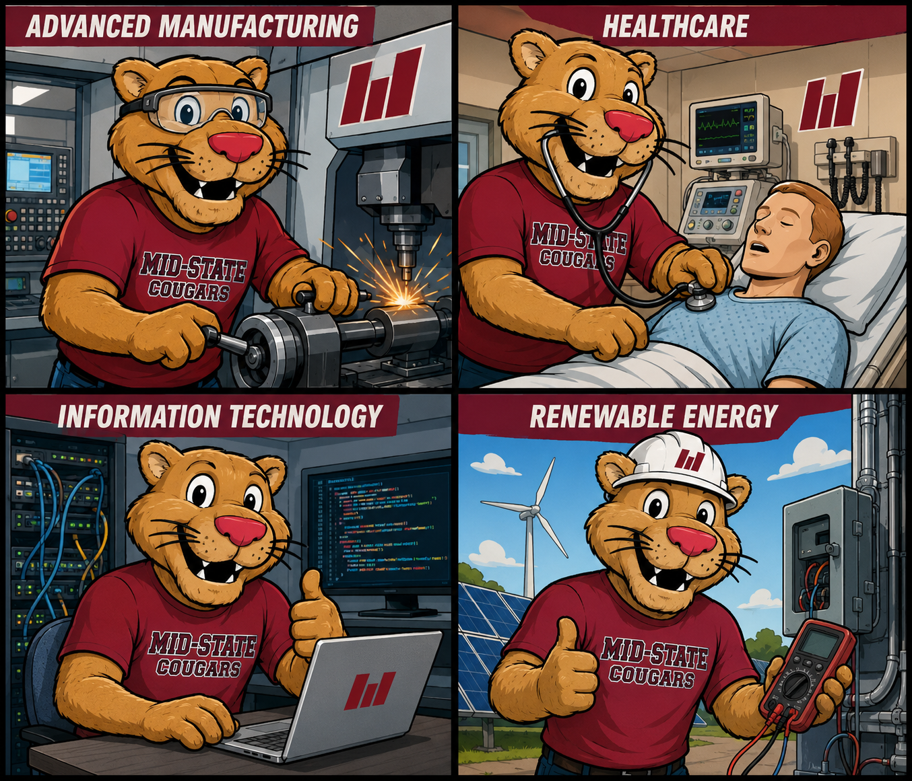

Artificial Insights
In This Issue

AI May Be Lowering the Barrier to Filing Federal Lawsuits

A new paper on pro se federal civil litigation suggests that self-represented federal civil case filings rose by a out 50% in 2025. The surge was in areas easy to copy such as civil rights and consumer credit. Looking at a bigger picture than this, any system that was partly regulated by human effort is going to be impacted by AI inroads. Of course, we see it with assignments, e-mail messages, and the occasional memo. The legal field is not ready for this influx... are we?
Tokenmaxxing Turns AI Usage Into the New Lines-of-Code Metric

Engineers at major companies are reportedly burning tokens to climb internal AI usage dashboards or avoid looking insufficiently “AI-native.” Meta, Microsoft, Salesforce, and Shopify each had a version of this going on. In the case of Meta, the team used almost $1 billon in tokens during one month. It's hard for me to even imagine a culture where cost is completely ignored like this, but I guess that's what happens when $Billions are being spent every month on AI. I don't understand why you would track AI usage instead of just results.
Elon Musk v. OpenAI Turns the Company’s Origin Story Into a Courtroom Drama

Elon Musk’s trial against OpenAI is now in its second week, and it is doing what major tech trials do best: dragging private texts, old grudges, control fights, romantic entanglements, and idealistic founding language into public view. Musk says OpenAI betrayed its original nonprofit mission by shifting toward a for-profit structure. OpenAI says Musk knew about for-profit discussions, wanted control, left after failing to get it, and is now attacking the company while running rival AI firm xAI. The current testimony from Shivon Zilis added another soap-opera layer because she served on OpenAI’s board, later became a Neuralink executive, has children with Musk, and was accused by OpenAI of serving as a kind of information channel back to him. At the end of the day the question they are answering is just.. "can an AI company claim a public-benefit mission while becoming one of the most valuable commercial platforms in the world?"
Meta Will Use AI to Estimate Whether Users Are Underage

Meta is rolling out AI age-assurance systems that analyze photos, videos, text, interaction patterns, and signals such as apparent height and bone structure to identify likely under-13 users on Facebook and Instagram. Meta says this is not facial recognition. Even so, it is another example of platforms using AI to infer personal traits from behavior and media. The child-safety goal is real, and I love using AI for good in this way. However, Meta does not have the best reputation for using our data responsibly.
Microsoft Says the Agent Era Is About Human Agency, Not Just Automation

Microsoft’s 2026 Work Trend Index argues that AI agents are raising the ceiling on individual work. Agents are just an AI routine that does more complex work. The use of agents is helping by shifting human roles toward intent-setting, judgment, and ownership. This is exactly where I think we need to be. AI as our tool and helper where we run the show.

🛠️ OpenAI Image 2 Raises the Ceiling for Practical Image Generation

The News: OpenAI Image 2 is producing strikingly high-quality images that really seem to follow instructions well. I've created posters, banners, instructional sheets, and even a mock-up of a text message string. I'm impressed, and that's not easy to do with AI tools.
My Take: I'm going to attach an idea that came from the mind of Mo, so she get's all the credit! Grit in cartoon format. Look at this image- I am truly impressed.
🛠️ ChatGPT for Clinicians Brings AI Into Verified Medical Workflows

The News: OpenAI has launched ChatGPT for Clinicians, a free version of ChatGPT for verified U.S. clinicians. It is set up as a secure clinical reasoning and documentation partner, with lots of cited medical evidence, plenty of usage limits, and medical-specific tools.
My Take: This is one of the clearer examples of AI moving from general-purpose chatbot into professional workflows in specific fields. The important part is not that doctors can ask ChatGPT questions. They already could. The important part is verification, citations, privacy framing, and workflow-specific design are all built in.
🛠️ Maket Turns Plain-Language Floor Plan Ideas Into Residential Layouts

The News: Maket is an AI floor plan studio that lets users generate, edit, and visualize residential layouts by just speaking to the program.
My Take: This is a another example like the medical GPT above where AI is doing specialized professional tooling. It does not replace things like architecture, engineering, zoning, permits, and building codes, but it can help people move from vague idea to visual draft much faster. It might make someone like me, who can't visualze something like this at all, be able to move off of a blank sheet of paper where I'm drawing the room.

🔬 The OpenAI Trial Is Really About Mission, Money, and Control

I just can't stop talking about this trial. The fight between Elon Musk and OpenAI is not just a celebrity founder feud, although it is absolutely that too. Musk argues that OpenAI was founded as a nonprofit devoted to developing AI for the benefit of humanity, and that Sam Altman and Greg Brockman violated that founding promise by steering the company toward a for-profit structure. OpenAI’s response is that frontier AI required enormous compute, capital, and talent, and that Musk knew about for-profit discussions before leaving after he failed to secure control.
The trial has already produced several revealing moments. Musk testified for more than seven hours across three days. Under cross-examination, he acknowledged that xAI partly used OpenAI models to train Grok through distillation. This is essentially asking a smarterr model the answers to questions millions of times and then training your new model on those responses. This answer caused a gasp in the courtroom, because distillation may be unethical, but it's absolutely against the terms of service for ChatGPT.
The soap opera details are not separate from the serious issue. They show how personal relationships, company control, board access, donor expectations, and billion-dollar strategy all blur together in the AI industry. OpenAI’s founding story was built around public benefit. Specifically, it said "OpenAI’s goal is to advance digital intelligence in the way that is most likely to benefit humanity as a whole, unconstrained by a need to generate financial return." Elon's complaint says that public-benefit promise was betrayed. OpenAI says the public-benefit mission could not survive without a structure that could raise the money required to build frontier models. Was the for-profit turn a betrayal of the mission, or the only realistic way to pursue it?
If Musk wins, OpenAI’s structure could be disrupted, Altman and Brockman’s leadership could be threatened, and OpenAI will need to split apart.
If OpenAI wins, the company’s current structure remains and, probably they end up paying Musk nothing.

🎓 AI Is Collapsing the Effort Barrier

The pro se lawsuit paper from above is not technically an education story, but I think a similar trend could impact all of us. If AI can help more people file lawsuits quickly, then it can certainly help students produce documentation for school. I'm not talking about homework in this case, but everything from student complaints, appeals, financial aid applications, or even student applications. Given that we have a human reviewer for each of these, there is a potential for being overwhelmed by AI-driven activity. We may need to consider seeing if AI can help us automate those tasks that we can. HR departments are also seeing this impact, where the number of resumes have increased exponentially.

🎬 Replit Slides Shows How Fast AI Presentation Workflows Are Improving
Replit is promoting an AI-powered slide tool that can create decks from scratch OR import and replicate an existing PowerPoint style.


Create One ChatGPT Image—Maybe Signage or a Poster, Maybe Something Odder
This week’s challenge is intentionally small: generate exactly one image in ChatGPT so you can see how strong image generation has gotten. Start with something practical if you want—a sign, flyer, or poster you actually need—or skip straight to an idea that could never come out of a stock library. Either way, you will get a feel for how well the model listens and how finished the result feels without you touching Photoshop.
The Prompt:
"Describe what you want in everyday language. Include audience (“busy faculty,” “first-year students”), tone (“warm but not cute”), and any text you want legible on the image. Then generate once before you over-polish the prompt.
Practical starter ideas:
- Refresh hallway or office signage with clearer wording and a bolder layout - A one-page event poster or save-the-date with date, time, and a single visual metaphor - A handout graphic or slide hero image for something you repeat every semester
Afterward: Would last year’s tools have given you something this usable? What single follow-up edit would you ask ChatGPT for next?
"